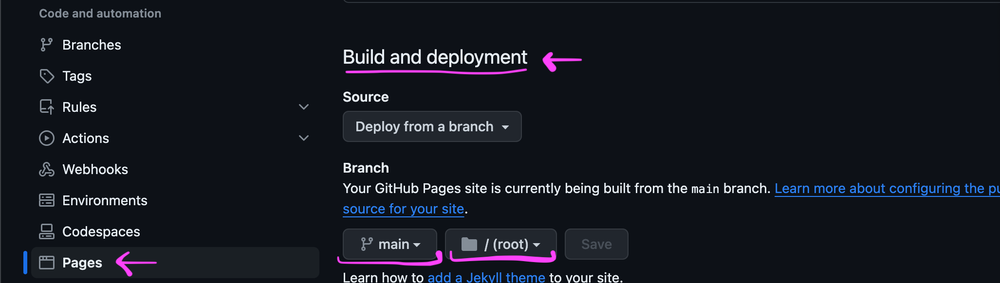
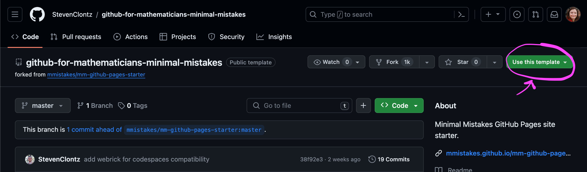
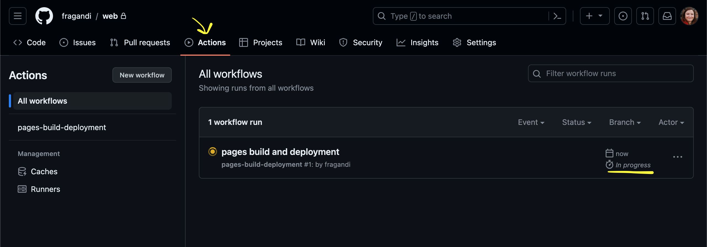
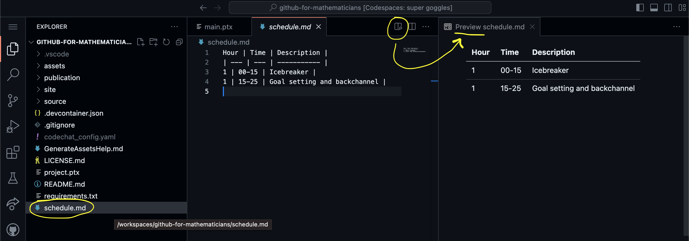

Having made your first repository in Chapter 2, and committed a few changes, you are now ready to share your work with the public. One way is to share a link to your repository at GitHub.com; as long as you made it a public repository, anyone can see your files.
Another option is to use GitHub Pages to host a customizable website with your work. This can be done with any existing repository by manually authoring HTML files, so let’s try it out with our existing example first. (Or, you can skip ahead to Section 4.2 to create a portfolio website without using HTML.)
Use GitHub.dev (Note 2.4.2) to create three files in the root of a new or existing repository.
Create a file named .nojekyll (note the period at the start) but don’t add any text to it. Simply creating this file will disable some advanced features of GitHub Pages we don’t need right now.
Create an index.html file. This book won’t discuss in depth how to author HTML, as we’ll learn how to author our website content in Markdown in the next section, but for now add the following content:
which has all three files created for you (be sure to unzip it first!).
Commit this update to your repository using Source Control, and confirm you see the two new files on your GitHub.com repository webpage.
Note4.1.1.
To enable GitHub Pages, go to your repository Settings, and choose Pages from the sidebar. From there you can select to “Deploy from a branch”, using the main branch and the / (root) directory, and after a few moments your site will be enabled.

Figure4.1.2.Settings to deploy a web page.
Once enabled, GitHub will provide a link to your public GitHub Pages website, hosted at GitHub.io. Click it and you’ll see the content of your index.html file, which displays the image downloaded as git-branches.png. (It should look like this 3
It’s good to remember how to distinguish the three GitHub domains:
GitHub.com is where your repository lives. It can be public or private.
GitHub.dev is where you can make changes to your repository through your web browser. This is private to you and you must commit and push your changes to the GitHub.com repository every so often. (See also Section 4.4.)
GitHub.io is your public GitHub Pages website, which you can edit by updating your repository files.
I recommend you add a link to your GitHub.io website from your GitHub.com repository page.
Note4.1.4.
On your repository page, you can edit the “About” sidebar to add useful information about your project. In particular, there’s a checkbox to automatically display your GitHub.io link to make it easy for others (and yourself!) to find your GitHub Pages site.
Section4.2Using a Template
While you can create a custom website by authoring HTML, it’d be great to not have to! There are several “templates” available for GitHub Pages that allow you to author your content in Markdown, as well as providing nice themes, automatic linking between different sections of your website, and so on.
Definition4.2.1.
A template repository on GitHub provides other GitHub users the ability to easily obtain a shallow copy of the latest commit to the template, created as a new repository they control.
This is meant for situations like a GitHub Pages website, where you probably don’t care about every single change that was made to create the template you’re using, and you don’t plan on contributing any of your changes back to the original repository. Instead, you just want the latest working files so you can insert your own content and get it online.
and click “Use this template”, and “Create a new repository”. This creates a new repository you own on GitHub.com, and you can follow the instructions in Note 4.1.1 to enable GitHub Pages.

Figure4.2.2.Use this template button. Once that’s done, visit your new GitHub.io website to see the placeholder content of your new website (don’t forget to add a link to your “About” sidebar, see Note 4.1.4).
Note4.2.3.
Deploying to GitHub Pages can take some time, so visiting the “Actions” tab on your repository page will let you see how this process is progressing. You can also see the status of this process by looking for the following icon next to your commit message: an orange dot (in progress), a green checkmark (deployed), or a red X (failure).

Figure4.2.4.Actions tab on Github.com.
Section4.3Customizing Your Site
Now that you have the template website hosted by GitHub Pages, you of course will want to customize it to yourself. For this book, I’ll get you started by handling a few of the obvious first steps, assuming you’re using the GitHub.dev service (Note 2.4.2).
Subsection4.3.1Configuration
First things first, let’s configure some basic elements of your site. These settings are found in /_config.yml. There are several pieces of this file you likely aren’t interested in editing (nor do you need to know at this point what they do), but you should at least find the title: and description: lines and edit them with your own information. The same goes for the author: name: and author: bio: entries as well.
To see that this worked, use Source Control to Commit and Push your edits. After a while (Note 4.2.3) you should be able to refresh your website and see your updated title, name, etc. (In Section 4.4, we will learn how to preview our edits more quickly, and without needing to push them to a live website, provided we’re comfortable using a Codespace as explored in Chapter 3.) You can repeat this process after each of the edits described below to see your results reflected on the live website.
Subsection4.3.2Photo
Next, let’s add your photo. A placeholder is available at /assets/images/bio-photo.jpg. You can drag your own JPG-format photo onto it in the File Explorer. Then you can delete the placeholder bio-photo.jpg and rename your photo to bio-photo.jpg.
Subsection4.3.3Pages
By default you have five files in your /_pages/ directory. The 404.md file describes what visitors see when a page isn’t found, and the three *-archive.md files can be used to customize pages that display certain blog posts.
The about.md file describes the content of your About page. The top few lines (Listing 4.3.1) describe some metadata about the page. You can edit the permalink to change the web address that will be used for this page, and the title to change the title shown in the browser tab for this page.
---
permalink: /about/
title: "About"
---
Listing4.3.1.About page metadata
Below the metadata is Markdown source that can be edited to include whatever content you’d like to appear within the page.
To create additional pages, copy-paste about.md to create new files in the /_pages/ directory, making sure to assign each page its own permalink. If you want these pages to appear in the navigation bar on top of your site, edit the /_data/navigation.yml configuration file to point to each permalink.
You can preview a compiled version of your markdown files (.md ) on the web, without having to run any commands. It is enough to open a markdown file and split the screen.

Figure4.3.2.Split screen to preview markdown file.
Subsection4.3.4Posts
Posts are similar to pages, and live in the /_posts/ directory. To create a new post, copy-paste any of the existing post files and rename it into the form YYYY-MM-DD-my-new-post.md (where YYYY-MM-DD is the date you want associated with the post).
The content of your post is just Markdown, as with pages. However, you have slightly different metadata to edit (Listing 4.3.3). In the date you can set the specific time of day you want your post to be associated with. You can also choose to assign each post categories and tags, which allow your posts to be sorted into appropriate category and tag pages, which are generated automatically for you.
---
title: "Welcome to Jekyll!"
date: 2019-04-18T15:34:30-04:00
categories:
- blog
tags:
- Jekyll
- update
---
Listing4.3.3.Post metadata
Section4.4Previewing GitHub Pages
Another useful application of Codespaces is the ability to preview your GitHub Pages site created in Section 4.2. Return to that repository on GitHub.com and create a new Codespace (Note 3.1.2).
To spin up your live preview, open a terminal by using the shortcut noted in Remark 3.2.4. To make sure the necessary software has been installed, type bundle and hit Enter. Then, you can enter jekyll serve to start the preview server.
You’ll see some output, and eventually Server address: http://127.0.0.1:4000. At that time an alert will appear that says “Your application on port 4000 is available”. You can use its “Open in browser” button, or hover over the http://127.0.0.1:4000 link to be given the same option.
This should open a URL such as random-words-123randomletters789-4000.app.github.dev, which will show a live preview of your GitHub Pages site in a new tab. As soon as you make edits in your Codespace tab, you can return to this tab to (within a second or two) see how your edits will update your live site. Note that this URL is private to you, and your public site won’t be updated until you Commit & Sync your changes (Note 3.1.4).
Personally, I use GitHub.dev (or even just the GitHub.com edit button) rather than a full Codespace when adding a quick post or making a quick edit on many of my GitHub Pages websites. But the Codespace option is very handy for when bigger changes are necessary, and you want to make sure everything looks just right before pushing it live to the public.